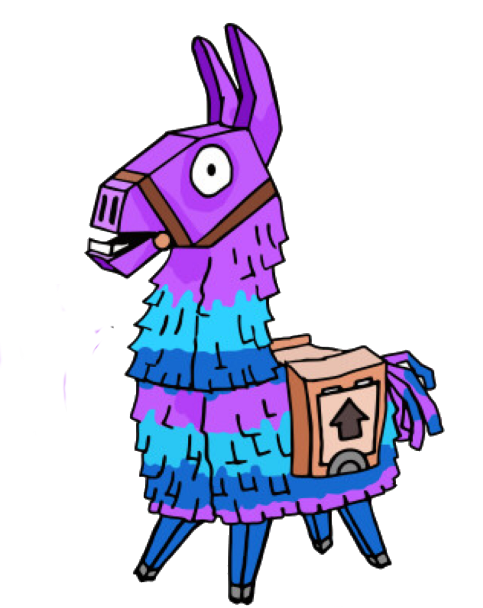

Fortnite is an online video game developed by Epic Games and released in 2017. It is available in three distinct game mode versions that otherwise share the same general gameplay and game engine: Fortnite: Save the World, a cooperative hybrid-tower defense-shooter-survival game for up to four players to fight off zombie-like creatures and defend objects with traps and fortifications they can build; Fortnite Battle Royale, a free-to-play battle royale game in which up to 100 players fight to be the last person standing; and Fortnite Creative, in which players are given complete freedom to create worlds and battle arenas. Save the World and Battle Royale were released in 2017 as early access titles, while Creative was released on December 6, 2018. Save the World is available only for Windows, macOS,[b] PlayStation 4, and Xbox One, while Battle Royale and Creative released for all those platforms, and also for Nintendo Switch, iOS,[b] and Android devices.[b] The game is expected to also launch with the release of the next-generation PlayStation 5 and Xbox Series X/S consoles.
While the Save the World and Creative versions have been successful for Epic Games, Fortnite Battle Royale in particular became a resounding success – drawing in more than 125 million players in less than a year, earning hundreds of millions of dollars per month, and becoming a cultural phenomenon.
Game modes
Fortnite is distributed as three different game modes, using the same engine; each has similar graphics, art assets, and game mechanics.
Fortnite: Save the World is a player-versus-environment cooperative game, with four players collaborating towards a common objective on various missions. The game is set after a fluke storm appears across Earth, causing 98% of the population to disappear, and the survivors to be attacked by zombie-like "husks". The players take the role of commanders of home base shelters, collecting resources, saving survivors, and defending equipment that helps to either collect data on the storm or to push back the storm. From missions, players are awarded a number of in-game items, which include hero characters, weapon and trap schematics, and survivors, all of which can be leveled up through gained experience to improve their attributes.
Fortnite Battle Royale is a player-versus-player game for up to 100 players, allowing one to play alone, in a duo, or in a squad (usually consisting of three or four players). Weaponless players airdrop from a "Battle Bus" that crosses the game's map. When they land, they must scavenge for weapons, items, resources, and even vehicles while trying to stay alive and to attack and eliminate other players. Over the course of a round, the safe area of the map shrinks down in size due to an incoming toxic storm; players outside that threshold take damage and can be eliminated if they fail to quickly evacuate. This forces remaining players into tighter spaces and encourages player encounters. The last player, duo, or squad remaining is the winner.
Fortnite Creative is a sandbox game mode, similar to Minecraft in that players are given complete freedom to spawn everything that is within the game on an island, and can create games such as battle arenas, race courses, platforming challenges, and more.
Players can use their pickaxe to knock down existing structures on the map to collect basic resources that are wood, brick, and metal. Subsequently, in all modes, the player can use these materials to build fortifications, such as walls, floors, and stairs. Such fortification pieces can be edited to add things like windows or doors. The materials used have different durability properties and can be updated to stronger variants using more materials of the same type. Within Save the World this enables players to create defensive fortifications around an objective or trap-filled tunnels to lure husks through. In Battle Royale, this provides the means to quickly traverse the map, protect oneself from enemy fire, or to delay an advancing foe. Players are encouraged to be very inventive in designing their fortifications in Creative.
While Battle Royale and Creative are free-to-play, Save the World is pay-to-play.[2] The games are monetized through the use of V-Bucks, in-game currency that can be purchased with real-world funds, but also earned through completing missions and other achievements in Save the World. V-Bucks in Save the World can be used to buy loot boxes, in the form of piñatas shaped like llamas, to gain a random selection of items. In Battle Royale, V-Bucks can be used to buy cosmetic items like character models or the like, or can also be used to purchase the game's battle pass, a tiered progression of customization rewards for gaining experience and completing certain objectives during the course of a Battle Royale season.
Development
Fortnite: Save the World
Fortnite began from an internal game jam at Epic Games following the publishing of Gears of War 3 around 2011. Though it was not initially one of the developed titles during the jam, the concept of merging the construction game genre, representing games like Minecraft and Terraria, and shooter games arose, leading to the foundation of Fortnite.[5][6] Development of Fortnite slowed due to several issues, including switching from the Unreal Engine 3 to Unreal Engine 4, a deeper role-playing game approach to extend the life of the game, and a switch of art style from a dark theme to a more cartoonish style. Further, Epic was looking to get into the games as a service model, and brought in Chinese publisher Tencent to help; Tencent took a large stake in Epic as part of this, leading to the departure of several executives, including Cliff Bleszinski, who had been a key part of Fortnite's development. Fortnite's approach was changed to be Epic's testbed for games as a service, and further slowed the development.[7][6][8]
Epic was able to prepare to release Fortnite as a paid early access title in July 2017, with plans to release it as free-to-play sometime in 2019 while gaining feedback from players to improve the game.[9][10][11][12] With the release of Fortnite Battle Royale, the player-versus-environment mode was distinguished as "Save the World". Ultimately, Epic opted to release Save the World as a premium title, bringing it out of early access on June 29, 2020.[13]
Fortnite Battle Royale
Near the same time that Epic released Fortnite into early access, PlayerUnknown's Battlegrounds had become a worldwide phenomenon, having sold over 5 million copies three months from its March 2017 release, and drawing strong interest in the battle royale genre. Epic recognized that with the Fortnite base game, they could also do a battle royale mode, and rapidly developed their own version atop Fortnite in about two months.[14] By September 2017, Epic was ready to release this as a second mode from "Save the World" in the paid-for earlier access, but then later decided to release it as a free game, Fortnite Battle Royale, supported with microtransactions. This version quickly gained players, with over 10 million players during its first two weeks of release, and leading Epic to create separate teams to continue the Fortnite Battle Royale development apart from the Save the World version, outside of common engine elements and art assets.[15][16] This allowed Fortnite Battle Royale to expand to other platforms otherwise not supported by Save the World, including iOS and Android mobile devices and the Nintendo Switch

Fortnite Creative
A creative sandbox mode launched on December 6, 2018, synchronized with the start of season 7 of Fortnite Battle Royale. Each player has access to a private, persistent island on which they construct buildings and add and manipulate objects as desired. Players are able to invite friends to this island and participate in unofficial games such as race tracks or jumping courses.[19] Initially, only players who purchased the battle pass could receive their own island, whereas players who did not purchase it received access to the game mode for free on December 13.
Reception
The Save the World mode achieved over one million players by August 2017, just prior to the release of Battle Royale.
Fortnite Battle Royale became a significant financial success for Epic Games, leading them to separate the teams between Save the World and Battle Royale to provide better support for both modes. Within two weeks of release, over 10 million players had played the mode, and by June 2018, just after the Nintendo Switch release, had reached 125 million players. Revenue from Fortnite Battle Royale during the first half of 2018 had been estimated in the hundreds of millions of dollars per month,[24][25] with total 2018 revenue estimated at $2.4 billion by analysis firm SuperData Research.[26]
Fortnite Battle Royale has also become a cultural phenomenon, with several celebrities reporting they play the game, and athletes using Fortnite emotes as victory celebrations. A notable streaming event in March 2018, with streamer Ninja playing Fortnite Battle Royale alongside Drake, Travis Scott, Kim DotCom, and Pittsburgh Steelers wide receiver JuJu Smith-Schuster, broke viewership records for Twitch to date, and led to Epic arranging a Fortnite Battle Royale pro–am with 50 pairs of streamers and professional players matched with celebrities at E3 2018 in June 2018.[29][30][31] Epic Games has developed organized esports competitions around Fortnite Battle Royale, such as the inaugural US$30 million Fortnite World Cup tournament that took place in July 2019.[32][33]
There has also been growing concern over Fortnite Battle Royale's draw toward young children, emphasized with the release of the mobile client. Parents and teachers had expressed concern that students are being distracted and drawn away from school work due to playing Fortnite. Concerns have also been raised about the impact that playing a game involving repeated depictions of gun violence may have on young children.[